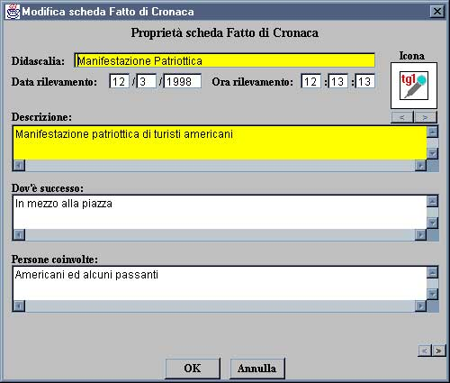
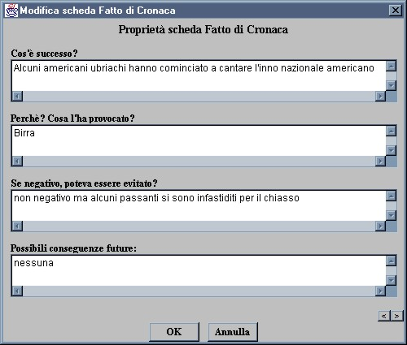
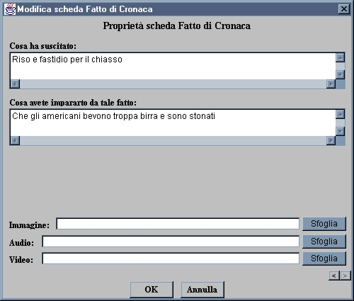
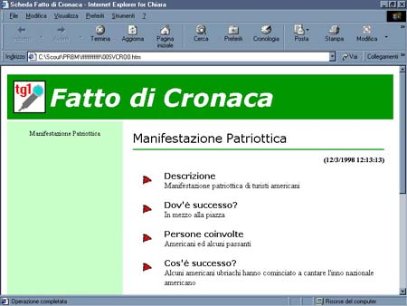

| Principale | Schede | Menu | Multimedia | PRB | Raccoglitore | Indice | Credits |
|
|
|
Scheda Fatto di Cronaca La scheda Fatto di Cronaca consente di inserire informazioni riguardo a fatti di cronaca incontrati lungo il percorso. Qui di seguito ci sono le istruzioni per completare la scheda nel modo giusto:  Didascalia: Definire un nome per l'oggetto che sarà così più facilmente identificabile all'interno del programma; Data/Ora/Località: Data ora e località del rilevamento; Descrizione: Qui si può immettere una prima descrizione dell'evento che verrà poi approfondito attraverso i campi successivi; Dov'è successo: Coordinate geografiche dell'avvenimento; Persone coivolte: Riportare il tipo di persone coinvolte, se una folla, un gruppo omogeneo etnico, razziale, o di altro tipo; Ricordati che puoi spostarti all'interno delle sezioni della scheda grazie ai due tastini in fondo a destra  Cos'è successo?: Immettere una breve descrizione dell'accaduto.. Perchè? Cosa l'ha provocato?: Causedell'accaduto. Se negativo, poteva essere evitato?: Eventualmente immettere alcune posssibili soluzioni pacifiche Possibili conseguenze future: Immettere previsioni di sviluppo della faccenda.  Cosa ha suscitato?: Immettere reazioni del pubblico. Cosa avete imparato da tale fatto?: Commentare con le proprie sensazioni personali. Immagine/Audio/Video: Se si hanno a disposizione fotografie (formato GIF o JPG), suoni (formato WAV, MP3, o qualsiasi Real Audio) e Filmati video (AVI o MOV) relativi all'ambiente qui si può inserirne il path (percorso all'interno del computer) ed il nome per far sì che alla presentazione finale in HTML il programma crei un collegamento ipertestuale per vederli o sentirli.
Ecco come si presenterà la pagina che verrà creata da questa scheda:  |